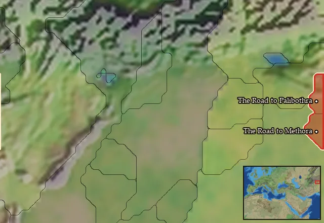

RTR: Imperium Surrectum
RTR: Imperium SurrectumMaurya Empire


- difficulty Medium
- Indian culture
- believes
 Indian
Indian - 6 settlements
- capital The Road to Palibothra
- 35,700 manpower
- 1 character
- 17 faction units
- 431 regional units
The campaign brief
"Do not be too honest in your dealings, for you would see by going to the forest that straight trees are cut down while crooked ones are left standing." – Chanakya (c. 370 - 283 BC)
Hail, stranger, have you come to bow and grovel before my mighty presence? I, the great Ashoka, blessed by deities from the highest heavens and pitch-black depths, subduer of Taxila, rightful heir by virtue to the throne of Chandragupta Maurya!
As the wise Chanakya taught our forefathers: "Books are as useful to a stupid person as a mirror is useful to a blind person." So, if you are neither blind nor stupid, I expect you, stranger, will have learned of the great deeds that have been foretold. The ascetic Pingala-vatsajiva predicted my rise and dominion over these lands, back at the Garden of the Golden Pavilion. Did the wise not state: "A man is great by deeds, not by birth"? I alone of Bindusura’s sons, I who had the best mount, seat, drink, vessel and food, should be the next king!
My father, misled by his evil advisors to prefer my stupid but easy-on-the-eye brother Susima as his heir, sent me off to the far north-east to crush a rebellion here at Taxila. When they refused to equip my fourfold-host of elephants, chariots, cavalry and infantry with weapons, I declared that the gods themselves would provide us with whatever means necessary if they truly favored me. Hardly had these words left my lips, or deities from heavens and earth emerged to present arms and praise me, the glorious Ashoka! Is there any clearer sign that it is me, not the perfidious Susima, who should be the next, rightful ruler of our great empire?
As Chanakya taught: "As a single withered tree, if set aflame, causes a whole forest to burn, so does a rascal son destroy a whole family." Rather than risking to set our blessed realm aflame, I should order my brother killed! His painful death, and perhaps the well-timed removal of some others of my kin, should ensure the stability of my to-be-blessed reign... As the wise say: "He who is overly attached to his family members, experiences fear and sorrow, for the root of all grief is attachment. Thus one should discard attachment to be happy." […] "Never settle for anything less than what you deserve. It’s not pride, it’s self-respect."
Will you, stranger, pay your respects? As the wise say: "Learn from the mistakes of others… you can’t live long enough to make them all yourselves." Is there a greater mistake than to turn down this great opportunity to serve me, who is and will become mightiest of all? "One who can’t determine his goals; cannot win." Join my glorious forces, armed by the gods themselves, for great deeds await us here and in regions even further removed from mighty Indus!
Starting settlements
Maurya Empire begins with 6 settlements and 35,700 manpower.
| Settlement | Region | Size | Manpower | Already built | Settlement | Region | Size | Manpower | Already built |
|---|---|---|---|---|---|---|---|---|---|
| The Road to Palibothra (capital) | The Road to Palibothra | city | 11,000 | 13 buildings | The Road to Methora | The Road to Methora | city | 9,500 | 13 buildings |
| Audoumbara | Audoumbaria | town | 2,200 | 7 buildings | Pimprama | Adraistaia | city | 8,000 | 12 buildings |
| Sangala | Kathaia | town | 2,600 | 7 buildings | Kounindapolis | Kounindia | town | 2,400 | 6 buildings |
What is already built in each settlement
The Road to Palibothra: Local Mint (Civic), Small Treasury, Governor's Palace, Small Stone Wall, Homeland, Sewers (Sanitation), Region Information Scroll, Paved Roads, Local Market, Basic Armoury, Assart Clearings (Crops), Temple, Large Glass Reworking Shop (Urban)
The Road to Methora: Governor's Palace, Small Stone Wall, Homeland, Sewers (Sanitation), Region Information Scroll, Paved Roads, Local Market, Basic Armoury, Assart Clearings (Crops), Small School (Civic), Temple, Spice Stall (Urban), Ivory Workshop (Rural)
Audoumbara, in Audoumbaria: Small Colony, Governor's House, Direct Rule, Region Information Scroll, Local Barter, Elephant Hunters (Rural), Slash and Burn (Crops)
Pimprama, in Adraistaia: Large Colony, Governor's Palace, Small Stone Wall, Direct Rule, Sewers (Sanitation), Region Information Scroll, Paved Roads, Local Market, Basic Armoury, Assart Clearings (Crops), Temple, Brewing Quarter (Urban)
Sangala, in Kathaia: Small Colony, Governor's House, Direct Rule, Region Information Scroll, Irrigation Ditches (Crops), Local Barter, Orchards (Rural)
Kounindapolis, in Kounindia: Governor's House, Direct Rule, Region Information Scroll, Local Barter, Elephant Hunters (Rural), Slash and Burn (Crops)
Starting diplomacy
At war with (1):  Indians
Indians
Like every faction, it is also at war with the  Free Peoples, who hold every settlement no faction does.
Free Peoples, who hold every settlement no faction does.
Homeland
Maurya Empire's homeland is 2 regions. Only there can it install the Homeland government (more on homelands).

Starting characters
| Name | Role | Age | |||||||||
|---|---|---|---|---|---|---|---|---|---|---|---|
| Ashoka | General | 34 |
Reforms
Open to every faction: Military innovations have arrived!, Second wave of military innovations have arrived!.
Units you can recruit
The same as in the main campaign.